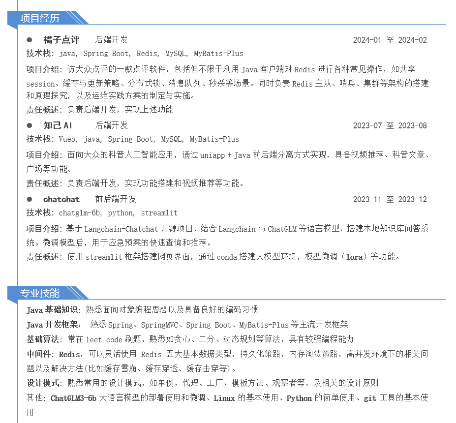
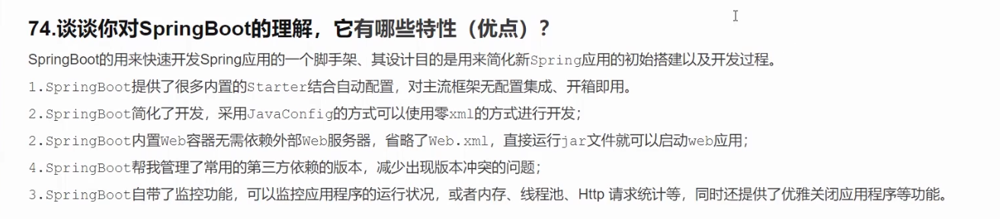
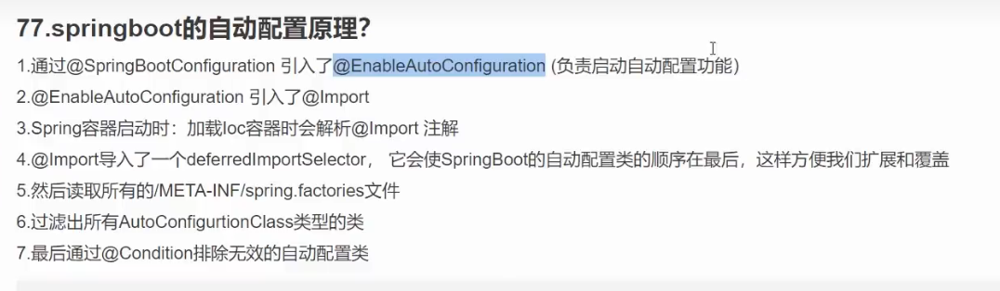
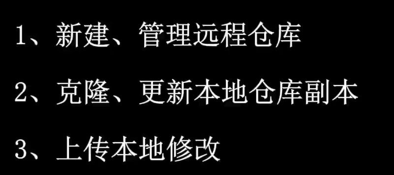
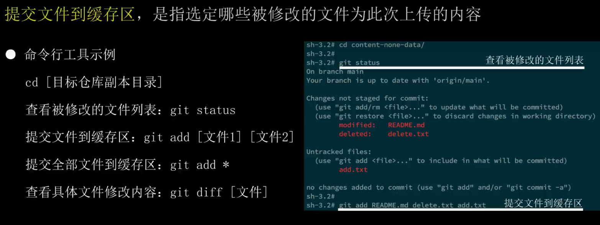

# 前言
大概三月末的时候，学校有个招聘会，然后我投了几家。刚刚打电话，问我明早有没有时间远程面试
没多想就答应了下来，这下好了，得回顾一下简历上写的东西了
对的，很烂

想着把 Redis 看一下（其实我还没学完，当时想着做简历就写上去了，而且最近在忙着比赛和打游戏，Java 这方面已经落下很多了）
也许到时候可以把面试官往我最近比赛的方面引。
# 可能的面试内容
时间紧任务重，能准备的也不是很充分
# 自我介绍
……
# Redis 项目的细节 *
五种类型
字符串、列表、hash、set、zset
持久化策略
…
内存淘汰策略
懒惰性删除 + 定期删除，懒惰性：用的时候才查是否过期。缺点：可能会有数据一直用不到，一直存在在内存。定期删除：定期删，缺点：遍历，时间长，内存压力大
结合：抽取一部分定期删除 + 懒惰
主从、哨兵
主服务器、从服务器，
哨兵：监控、提醒、自动故障迁移、统一的配置管理
其他见 Redis 学习记录
# Spring boot 的相关知识


# 最近比赛的内容
见 A25
# Git


# 面后整理
# 自我介绍
阿巴阿巴
# 问我什么项目提升最大（Redis）
我说了 Redis 的那个，介绍一下项目实现，因为没有开视频，我对着昨晚做的 Redis 讲 + 分布式锁
（懂不懂一天速成 Redis 的含金量 后仰.jpg）
# Mysql
索引、having、group by
# MyBatis 配置文件
Mysql 配置，MyBatis 插件的配置类……
# Spring Boot
AOP（可恶，看了的没问，没看的忘了）
# Java 基础
ArrayList 和 LinkList 区别：
- ArrayList 基于动态数组实现的非线程安全的集合；LinkedList 基于链表实现的非线程安全的集合。
- 对于随机 index 访问的 get 和 set 方法，一般 ArrayList 的速度要优于 LinkedList。因为 ArrayList 直接通过数组下标直接找到元素；LinkedList 要移动指针遍历每个元素直到找到为止。
# 问我什么课感兴趣
我说了 Java + 操作系统 + 数据结构
操作系统
银行家系统
# git 工具
常用命令
# 最近比赛的内容
因为我时不时提一嘴，我最近在打比赛，然后后面终于问了。之前在牛客学的精髓，引导面试官占据主导权
这我可太熟了，然后问我参数的意义
# 由于涉及到 AI，问我 AI 对我们 IT 行业的帮助
弱 AI，基于大数据而不是逻辑，所以只能辅助开发，而非独立开发
# 结尾
问了一下我的情况
# 感想
上次双选会，哥们就拿着之前做好的简历过去投，啥也没准备
所以这一次算是第一次面试，昨天接到电话后一直在准备（虽然也玩了好些），但确实是半天速成 Redis，把敲代码的过程大部分跳了，然后关注原理，并记录。看完后昨晚看了一遍记录，今天看了一遍。
然后再对着简历，准备了俩 Spring Boot 高频考点，粗看了一下 Git。早上还很早就醒了，害怕，jpg